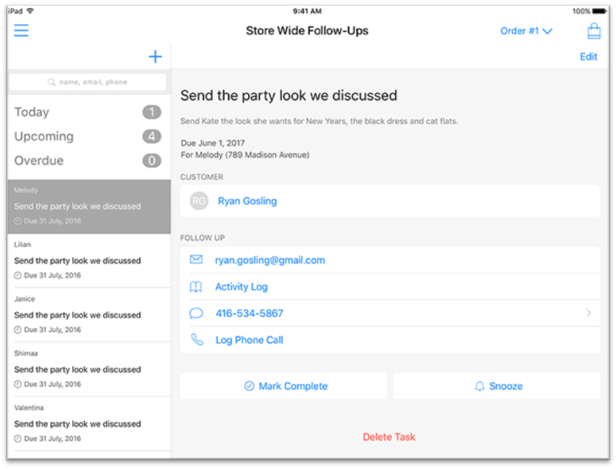
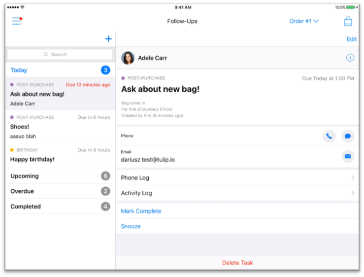

Product Management Coop @ Tulip
Sep 2017 - Dec 2017
At Tulip Retail, I was able to manage several pods (teams) working on different features of the app in preparation for the National Retail Federation conference taking place in the beginning of 2018.
I am especially proud of being able to lead the "Follow-Ups" pod to revamp the module found within the Clienteling section of the application. The follow-ups module was not being used by many of Tulip's customers so with the designers, we took some time to address the issues of the module. Some of these issues included the outdated look of the module and implementing push notifications to remind customer service representatives of their overdue followups. Below are the "before" and "after" screenshots of the module:


On an average day, you would find me:
- writing a backlog of detailed user stories on both Phabricator and Visual Studio Team Services, while communicating with teams to clarify blocks and to ensure features were working as expected
- running daily scrums, prioritizing features, assigning work to both developers and designers for sprints according to estimates and deadlines given
- presenting internal demos to new hires and acting as guide helping them familiarize themselves with the product
- maintaining and updating documentation to ensure that information was available for any employee who might need clarification on the functionality and implementation of any feature